Entiende por qué tu hierro está bajo y aprende a cuidar su equilibrio desde tu alimentación.
Te dijeron que el cansancio y el hierro bajo son normales.
No tienen por qué serlo. En este programa te explico por qué y cómo.
Estar dentro del rango
no siempre significa nutrición suficiente.
El hierro necesita otros micronutrientes para ser absorbido y aprovechado. Te quiero enseñar cómo funciona tu nutrición y cómo hacer cambios sostenibles que sí ayudan a tu cuerpo.
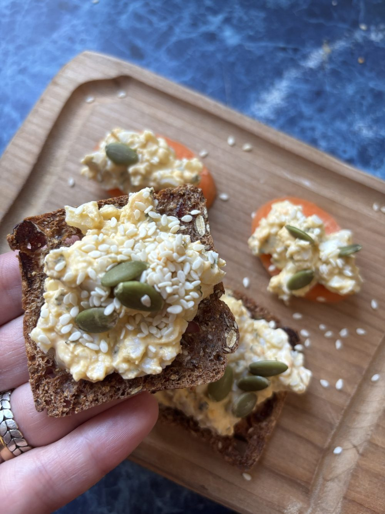
«Estás en rango, aunque sea el mínimo», y sigues agotada.
«Come hígado y lentejas», y la ferritina no se mueve.
«Tómate este suplemento», sin saber si es el adecuado ni si lo absorbes.
«El cansancio y la caída de pelo son normales».
El problema es mirar el hierro como un número aislado. Y no lo es.
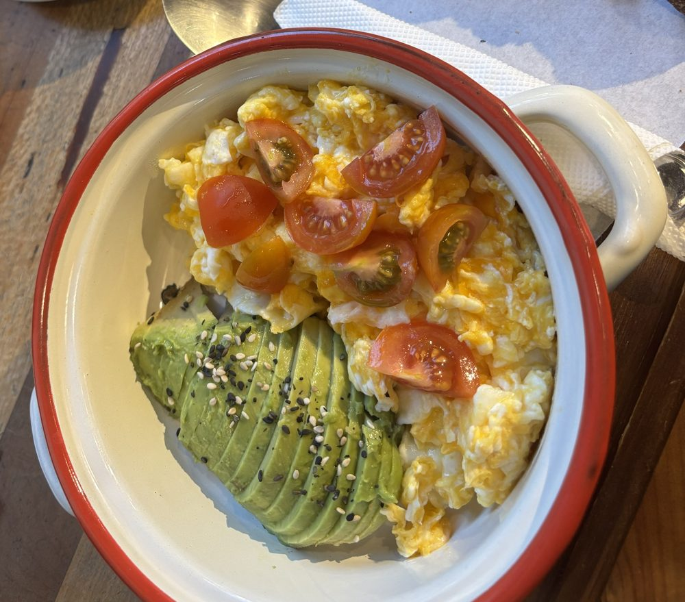
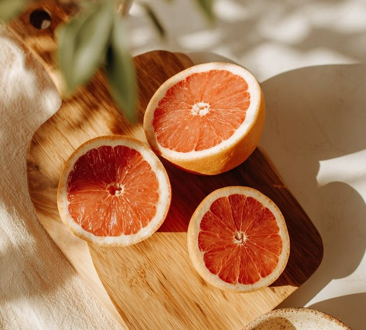
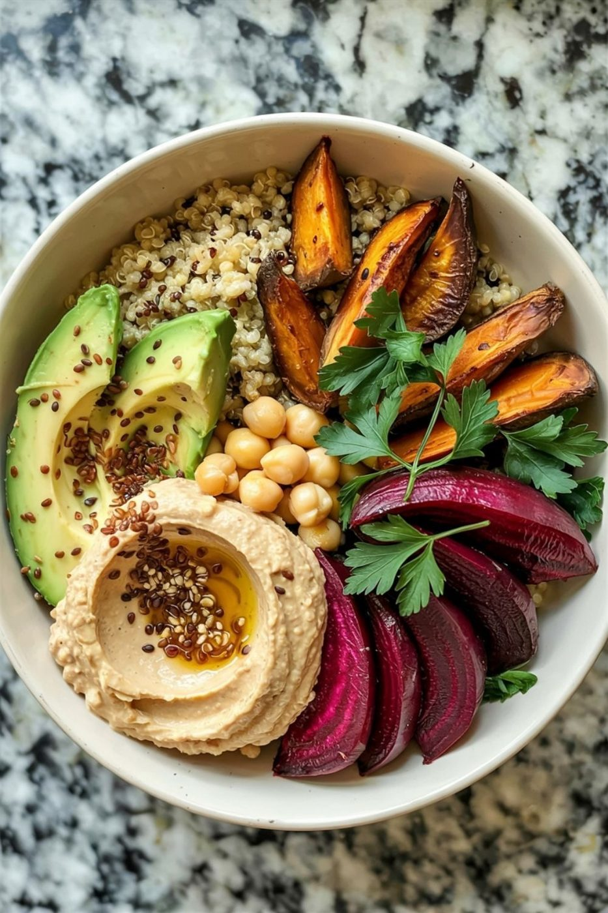
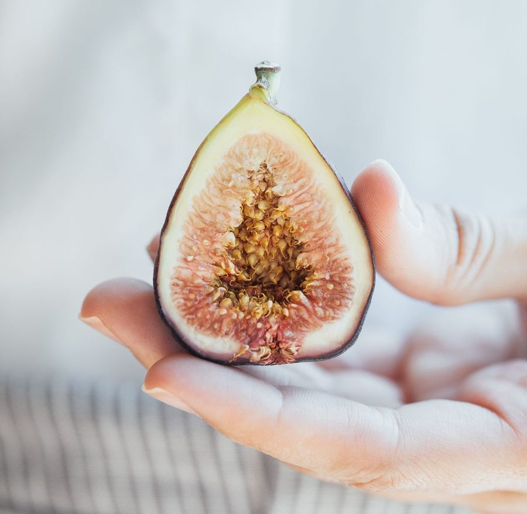
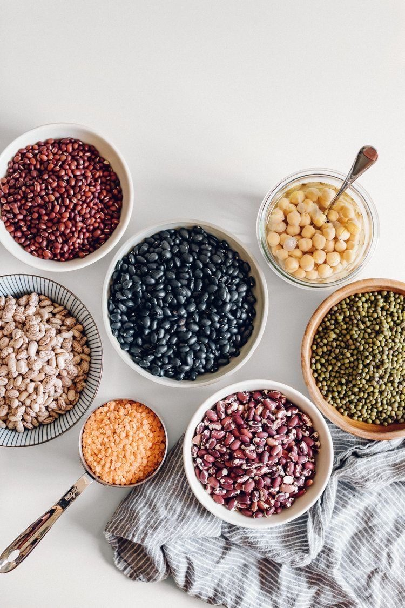
El cuerpo te muestra que hay una deficiencia de nutrientes: en la falta de energía, la falta de concentración, la sequedad del pelo, la piel y las uñas, y también en otros biomarcadores que te quiero enseñar a observar.
Si una pieza falla, da igual cuánto hierro comas o tomes. En el programa aprendes a ver cuál es la tuya.
Comer saludable no es lo mismo que comer suficiente.
Su acidez libera el hierro de los alimentos.
Si está inflamado o alterado, entra menos.
La transferrina lo reparte por la sangre.
Se guarda como ferritina y forma glóbulos rojos.
Menstruación, embarazo, estrés alto e hipotiroidismo vacían las reservas.
La inflamación eleva la hepcidina, la hormona que bloquea la entrada y el uso del hierro.
Si faltan, por más que comas y te suplementes, el hierro puede no subir.
Cada cuerpo responde a su ritmo. Este programa no reemplaza tu control médico: te da herramientas para entenderte y acompañar el proceso con criterio.
He acompañado a mujeres y pacientes de diferentes edades y contextos clínicos a entender su hierro: desde la ferritina que no sube hasta la fatiga que les dijeron que era normal.
En cada menstruación perdemos sangre y, con ella, hierro. ¿Cuántos años llevamos menstruando? ¿Y cuándo hemos vuelto a nuestro cuerpo desde la alimentación?
Nutricionista · Nutrición hormonal femeninaPara aprender, observar
y elegir mejor.
Cada pieza tiene su papel: primero entiendes tu caso, luego lo llevas a tu mesa y no lo haces sola.
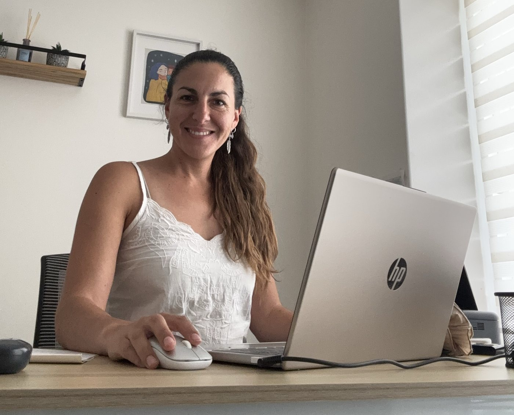
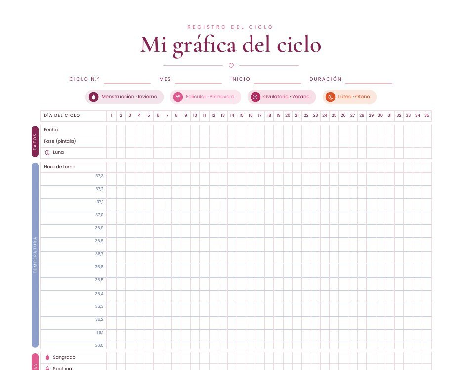
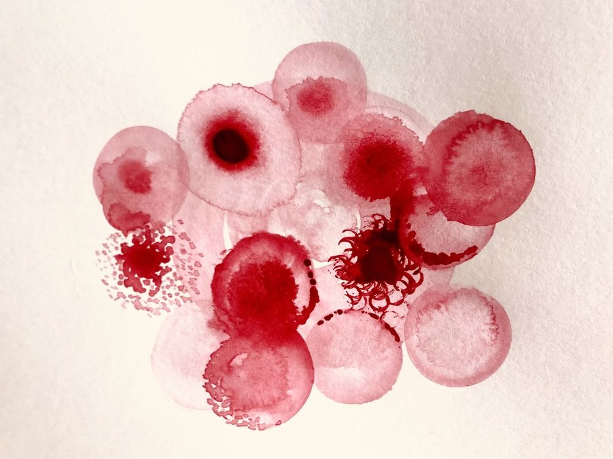
Aprender a comprar también es aprender a usar mejor tus recursos: tu tiempo, tu presupuesto, la estación y el placer de comer.
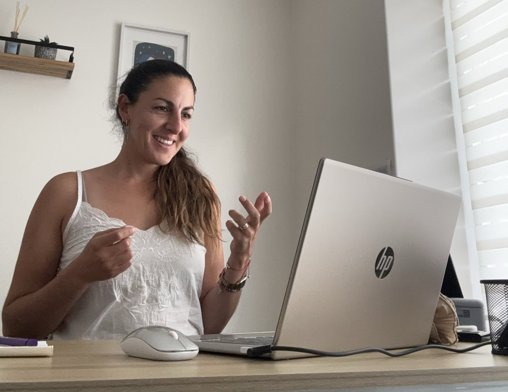
Con cámara encendida y tus preguntas. Si no puedes conectarte, las grabaciones estarán disponibles hasta el 31 de diciembre de 2027. Hora de Chile continental.
Los cambios se viven, se sienten y notarás cómo se nutre tu cuerpo.
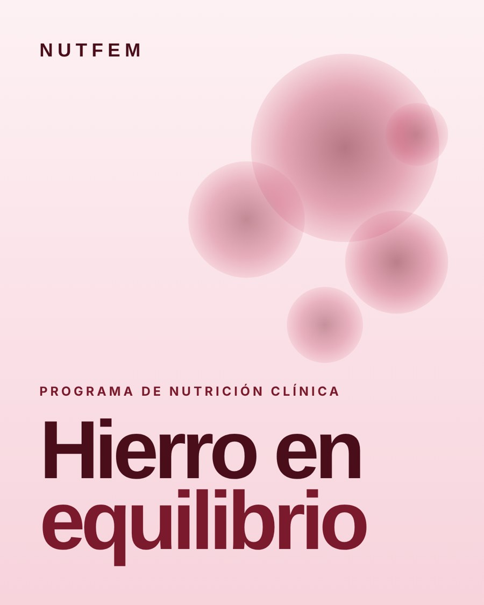
Sin promesas clínicas: vive tu transformación a tu ritmo, desde tu biología, tus preferencias y tus tolerancias alimentarias, aplicándolo a tu vida real. Cada cuerpo es diferente y las formas de mejorar la nutrición son infinitas. Te quiero guiar a elegir mejor entre todas las opciones.
Grabaciones: disponibles hasta el 31 de diciembre de 2027.
Por el valor de una consulta, transformas y renuevas todo tu conocimiento.
$47.000 CLP Pago único · Inicio miércoles 25 de noviembre, 12:00 hrsSi después quieres ir más allá, tendrás acceso prioritario a un acompañamiento personalizado para trabajar tu caso en profundidad.